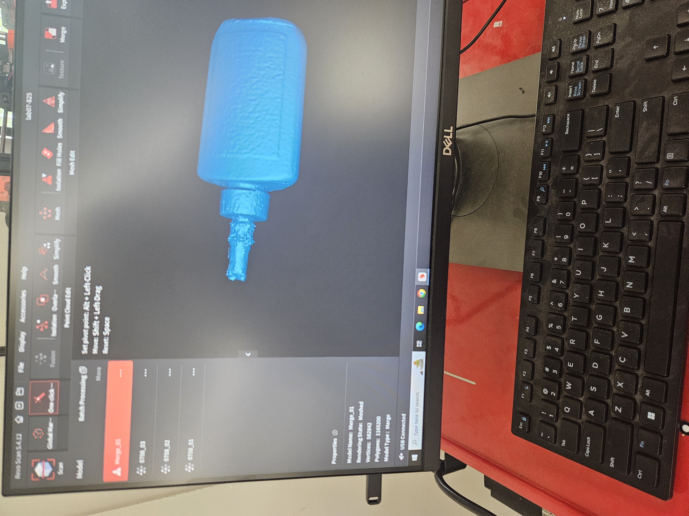

<div class="textcontainer">
<p class="margin"> </p>
<h3>Week 5: 3D Design & Printing</h3>
<h4>Assignment: Model and 3D print something</h4>
<h4>For this assignment, I used my previous guitar pick design to make two picks that have a slight gap between them at the picking point but are connected where you would hold it. The print was successful but the pick does not function as intended as I forgot that you strum at an angle and not perpendicularly to the guitar. Below is a link to the file.</h4>
<p class="margin"></p>
<div class="flexrow">
<a id="btn" href="https://a360.co/3Imqyu4" target="_blank">View 3D Model</a>
<a href="./gcode.gcode" download>Download Sliced File</a>
</div>
<p class="margin"></p>
<h4>Assignment 2: Scan something</h4>
<h4>For this assignment I scanned a bottle of wood glue, below is a picture of the scan</h4>
<div style="display: flex; gap: 20px; flex-wrap: wrap;">
<p></p>
</div>
<h2>Assignment 3: Final Project Outline</h2>
<h3>Ingredients</h3>
<h4>
2 mountable audio jacks,
at least 2 potentiometers,
2 toggle switches,
LED light,
resistor for LED,
capacitors ~5,
resistors,
breadboard,
microcontroller,
power supply,
wires,
3d printed/cnc enclosure material,
3D printed or molded knob caps 2,
lasercut faceplate 1,
screws+nuts
</h4>
<h3>Timeline</h3>
<h4>designing the enclosure 7/21</h4>
<h4>
fabricating the enclosure/pieces 7/25</h4>
<h4>
prototyping and coding 8/1</h4><h4>
putting it all together and debugging until presentations
</h4>
</div>